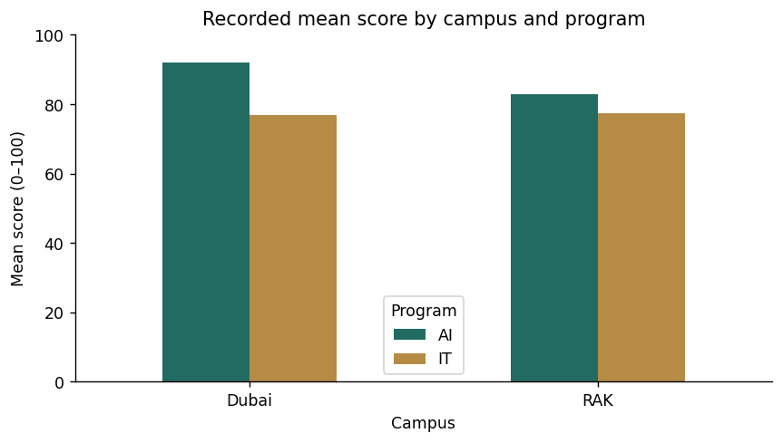

Each run starts with fresh data. Download any exported files before another run. Your written answers and code drafts are saved on this device; export your work to keep a backup.
M26C01 · Explore · predict · practice
Clean the raw table and keep an audit trail
Bring the cleaning skills together. Remove the known exact duplicate, normalize labels, preserve why a score is unavailable, and flag impossible attendance as missing. This exercise makes no assumption that an absent score equals zero.
Student_ID Name Campus Score Score_Status Attendance
0 S001 Amira RAK 88.0 recorded 95.0
1 S002 Bilal Dubai 72.0 recorded 85.0
2 S003 Chloe RAK 91.0 recorded 98.0
3 S004 Dana Dubai <NA> missing 78.0
4 S005 Ethan RAK 79.0 recorded 90.0
5 S006 Fatima Dubai 95.0 recorded 99.0
6 S007 Grace RAK 84.0 recorded 92.0
7 S008 Hassan Dubai <NA> absent 70.0
8 S009 Ivy RAK 76.0 recorded 88.0
9 S010 Jamal Dubai 89.0 recorded 96.0
10 S011 Khalid RAK 68.0 recorded <NA>
11 S012 Lina Dubai 82.0 recorded 94.0
Rows: 12
Unavailable scores: 2
Watch for this. Do not discard the raw labels before you have recorded their meaning.
Your turn
Use the cleaned table to create a review list containing students with a missing Score, Study_Hours, or Attendance. Store it in result with columns Student_ID, Score, Study_Hours, and Attendance, then print result.
For the code check, keep these result variable names: result. Different valid approaches are welcome.
Review S004, S006, S008, and S011. Each record has at least one unavailable or invalid value. A review flag does not tell you how the missing value should be replaced.
Compare your explanations
Read. The original text distinguishes an absent student from an already missing score. Conversion alone would erase that distinction.
Predict. 12 unique students remain; two scores are missing numerically, S004 and S008.
Explain. The correct attendance is unknown. Capping would invent a value; flagging allows later correction from a source.
One quick check
What evidence supports changing 105 to missing?
What you should be able to explain. Clean with documented rules and preserve the reasons for missing values.
M26C02 · Explore · predict · practice
Report a mean with its denominator
A group average is easier to interpret when its sample count is visible. Count all students and count recorded scores separately. Pandas mean skips missing numeric scores by default; say that in your report.
AI has six recorded scores and a mean of 85.83. IT has four recorded scores, two missing scores, and a mean of 77.25. These fictional data do not establish a general difference between programs.
Compare your explanations
Read. Students counts rows. Recorded_Scores counts non-missing scores.
Predict. Dubai has six students but only four recorded scores in the cleaned raw table.
Explain. No. It is based on four recorded scores. The missing observations may also affect the interpretation.
One quick check
Which denominator does mean use here?
What you should be able to explain. Attach counts and missingness to summary statistics.
M26C03 · Explore · predict · practice
Join, audit, and select a follow-up list
Combine the cleaned records with assessment results, checking both match quality and row counts. The follow-up rule below uses an observed Score under 75 or a missing assessment. Unknown scores need separate review, not automatic failure.
S012 is student-only; S013 is assessment-only. Investigate both before treating the assessment file as complete.
Compare your explanations
Read. An unknown score should not be classified as below 75. Missing scores are handled by a separate review process.
Predict. S012, Lina.
Explain. No. It only means this specific rule does not classify that student. Missing data still need review.
One quick check
A missing score should automatically become a failing score.
What you should be able to explain. Keep classification rules separate from data-quality review.
M26C04 · Explore · predict · practice
Create a table, a plot, and a reproducible export
Finish with a compact report and a plot that answers a stated question. Keep the clean table and the summary as separate outputs. On a new run, rebuild the report from the source and the written cleaning rules.
Recorded mean scores:
Program AI IT
Campus
Dubai 92.0 77.0
RAK 82.75 77.5
Recorded score counts:
Program AI IT
Campus
Dubai 2 2
RAK 4 2
Saved cleaned data, summary, and recorded counts in outputs/.

Watch for this. CSV does not preserve every pandas dtype. Recheck dtypes when loading it later.
Your turn
Make a Program-level report with columns Program, Recorded_Scores, and Mean_Score. Export it without a DataFrame index to capstone_program_report.csv. Read the exported file back into read_back and verify its columns and row count.
For the code check, keep these result variable names: read_back. Different valid approaches are welcome.
Show a hint
Use groupby, agg, to_csv(index=False), and read_csv.
The CSV contains Program, Recorded_Scores, and Mean_Score, with no extra unnamed index column. Reading the file back checks the delivered table, not just the in-memory object.
Compare your explanations
Read. Campus is stored in the pivot table index and carries meaning. Removing it would lose the campus labels.
Predict. Four: AI and IT within Dubai and RAK.
Explain. The number of recorded scores per group, the missing-score policy, and a note that these are fictional teaching data. Bar differences do not prove causation.
One quick check
When is index=False appropriate for this Program report?
What you should be able to explain. Deliver a report that another person can reproduce and interpret.